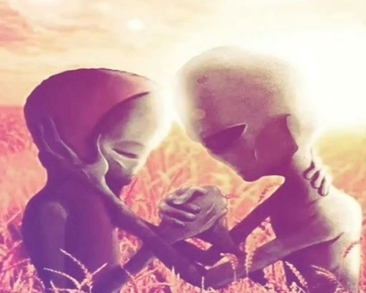

October 28, 2026
твой запах смешаннй с дыханием и ощущением на коже ощущается лучше чем секс, я бы не отказалась от еще одного раунда
но и не отказалась от 20 минут в тишине держа твою руку, я давно не ощущала такого спокойствия, из сердца боль выходит
прямо в руку когда ты меня держишь, мне больше не нужно причинять себе вред что бы ощутить это облегчение и освобождение
от тоски что я давно ношу с собой под сердцем изо дня в день без способа вызволить всю любовь что хранится там глубоко что
никому не была нужна и интересна. мы дети полные любви и тоски без понимания как жить так как живем все в первый раз учась
на своих ошибках или входя в цикл состоящий из волн эмоций от которого так тяжело отказатся будь это наркотики или вечный поиск
любви и близости что под конец унизит тебя больше чем какой либо человек, только я это делаю и выбираю даже с пониманием
я не могу в полной мере отказатся от похоти что тревожит меня каждое утро или когда я тебя вижу разливаясь по телу дрожжанием
будто я чихуахуа. (пиздец сравнение конечно но ладно, я поэт я так вижу) иногда мне кажется что с тобой мне не нужно ничего говорить,
я не знаю что в твоей голове так же как и ты не знаешь что в моей но когда ты меня целуешь или держишь за руку всё понятно, мы
будем видится редко но все же ища друг друга когда оно будет возможно и необходимо, забыть что мне кто то что то обещал, забыть
что тебе кто то писал, забыть всё мирское и людское будто больше ничего в этом мире нет кроме наших двух душ что будут
связаны на недолгое время наших жизней. я бы показала тебе свой мир то что была моя жизнь в россии, мою музыку и то чем я являюсь
по настоящему, но мы то знаем что она бы этого не хотела ;)

October 25, 2026
моя кровать пуста так же как и моя душа жаждущая связи и заботы эти дни все проходящие года что я
живу одна изо дня в день ища себя в этом мире и каждый раз убеждаясь что мне тут нет места как и
моему телу вплощающему похоть и любовь одновременно, все очень скоротечно и никогда не задерживается
надолго вокруг меня как и я сама являюсь непостоянностью которую не смогу изменить так же как и мое лицо,
личность или душу. у нас столько общего с вами всеми но что такое этот человеческий интерес когда он
появляется при связи или из за своих предрассудков, все мы считаем себя чистыми и приятными людьми,
и вот нас двое и кто то уже хуже и кого то обидел за то что для другого вообще не является причиной.
я просто хочу почувствовать твою руку эти дни, руку что будет гладить меня по щеке и согревать мое мерзлое
лицо на протяжении всей зимы которую я проведу в одиночестве сбегая к практически незнакомым мне людям
которых я узнала на улицах города ночами, к людям что живут всю жизнь так же как и я в поисках той
родственной души и ощущения дыхания на своей коже что бы знать что не только они тут живые и реальные,
недавно я увидела девушку с футболкой "not into npc's" и вы не поверите как она выглядела, обычный npc
как и все мы, мы никогда не находимся в реальном времени слушая музыку думая о своем и смотря в телефон
не видя что реально происходит. культура уникальности прониклась в наши мозги что мы забыли про то что
наше коллективное состявляющее важней чем по одному, я с Алексом начала так сильно верить что мы
такие особенные и такие ахуенные что все нас как то презирают или общаются про нас и мечтают, может это
была и правда но она дошла до радикальности что каждая история людей в инстаграме что то значила, хотя
в случае с китайцем там и правда были странные совпадения но это ничего не значит в глобальном плане,
мы создали свой пузырь мысли о том какие мы классные что просто дошли чуть ли не до того что мы боги, то
что алекс может быть перерождением Че Гевары а я той женщиной из за которой мужчины начинали войны(что
по сути и произошло в своей манере). они были долгими друзьями с вечеринок и всегда были в одной группе
но потом пришла я всех выебала и все они перестали общаться и сошли с ума каждый по своему, один нашел мне
замену в своей лучшей подруге 16 лет(не хочу говорить точно что это замена мне хотя кто это увидит блять хахаха),
кто то мне писал что бы просто высказаться о том что у него на душе, всех этих людей объединяет одна фраза
"мне никогда не было так хорошо с кем то как с тобой" или "я давно не проводил такого хорошего времени с женщиной"
эта фраза не всегда одна и та же но значит одно, я что то более чем все эти людишки, подпитвыая мое чувство
уникальности которое мне всучили с детства ради которого я делаю это всё, почувствовать что я ценна хоть на момент,
а потом уйти к кому то еще или закрытся опять дома выходя из дома пару раз в неделю в надежде нахождения
моего любимого ощущения - уникальности. до тех пор пока память обо мне живет, буду жить и я, вспомни про меня
и я вернусь, забудь и я сразу же уйду через первую попавшуюся дверь что ведет в другой мир, где я всегда буду помнить.
October 22, 2026
если ты так уверенна что сила мысли работает и люди создали войну только думая о ней то какого хуя ты все ещё жива
после 8 лет мыслей о том что бы ты умерла жива и продолжаешь пердеть в стул смотря видео про свою секту и работя на них
применяя техники растягивание кошелька что бы продать больше бреда людям которые не разбираются в медицине и самой потом
купить какой то хуйни на 200 евро и говорить что нам надо экономить а то рискуем остатся без еды и дома в этом месяце,
экономить что бы кормить то какой свинотой ты являешься и потом говорить то что ты знаешь лучше про все и как быть с мужиками
когда на тебя никто даже не взглянет и к тебя нет ни единственного удачного опыта с мужчинами, какой пример ты мне хочешь
подать когда ты просто неудачница без успешного будущего которая будет сосать хуй своей секте так как только там тебя примут
и будут делать вид что любят давя лыбу как дураки обманывая других ради своей же прибыли разводя всех налево и направо
манипулируя ими по видом помощи когда уже все есть за бесплатно, продавать говно в обертке под видом золотой конфетки
тебе уже не сложно после стольких лет. ты отталкиваешь из моей жизни тех кто давал мне что то осьавляя только себя как
единственный источник достоверной информации зная что я никуда не уйду и зная что только по твоей вине я такая
только по твоей вине ты оставляла меня дома годами оформив контракт по работе с этой сектой, только по
твоей вине я стала зависимой от порнографии так как никто не ограничивал мой доступ к интернету,
по твоей вине я перестала думать о своих предпочтениях что бы не беспокоить отца, очередного идиота на которого ты
потратила 11 лет после его банкротства и прочей хуйни, ты правда думаешь что сможешь учить меня жизни когда у тебя ничего нет?
ты сама не более что вечно говоришь и почти нихуя не делаешь ты 6 лет не можешь закончить картину из курса который купила,
ты только и тратишь и пиздишь что сделаешь что то по итогу все что у тебя есть это секта и бумажки с надписями которые тебе
нихуя не дали.
October 17, 2026
теперь я поняла что у меня есть предпочтения в мужчинах, я перестала выбирать что хочу на завтрак
и хочу ли я в туалет, докатившись до того что меня целует какой то жирный боливианец сверху меня,
+ 1 национальность в счет, мерзкий кабан. спасло только то что он уже уходил и отмазка что у меня месячные
что бы он не лез куда не надо своими колбасками, вот что чувствовал китаец когда я его обнимала и целовала
точнее то что он не чувствовал), мерзость к себе проявляется как будто вылазит прыщ который сначала болит, краснеет
находится под кожей и потом из него выходит весь гной и потом от него остается след и боль еще на неделю выделяя
легкие количества гноя до тех пор пока ты не достанешь твердую часть из за которой все началось а то иначе он станет гнойником.
самоуважения нет как и осознания предпочтений, всю жизнь за меня выбирали так что под конец мне стало все равно,
только недавно я смогла выбирать что я хочу есть или выпить, бери что дают говорили они, ну я и давала всем кто меня брал
без рабора что и как, только когда дело доходило до действия уже было не смешно, я пьяная от бокала вина а он толстый русский у которого
зачем то лежат иголки от шприцов в лампе стола, только если подумать сколько раз меня могли изнасиловать и выбросить в канаву
уже страшно, от того что мне так повезло нужно богу молиться (самой себе и всему что вокруг нас) может все люди и вправду
разные версии меня в других обстоятельствах, тогда друзья корсео: мигель джованни и себастьян это он в разных вселенных
но в какой бы вселенной он не был у него хуевое зрение.
October 15, 2026
и вот я тут решив выделится и быть не как все с телеграм каналом или другими методами самовыражения.
вчера я вперыве медитировала в моем любимом месте у речки никогда мне не было так спокойно как тогда,
я думаю это была судьба что я уже готовилась к медитации а этот день и в книге мне дали упражение по
медитации для наблюдения за своими мыслями. эта скамейка хранит много людей и воспоминаний как первая встреча с артемом,
его бывшей трогающей меня за сиськи, пьяным владом с марроканцами которые его будили, викой, дариной,
китайцем, касаем, алексом с друзьями который туда пришел то ли грустный то ли накуренный. и днем и ночью это место прекрасно
сменяя людей которые туда приходят и проводят свое время. поистине прекрасное место со своей атмосферой в мурсии.
только тут мне есть место на этой планете, там где тихо и никого нет кроме меня и пары проходящих людей
и зачем ты мне пишешь после игнорируя меня одну неделю, зачем ты так дразнишься скажи мне что ты вообще хочешь
от меня, соврал и испарился гад, только бы увидеть что находится в голове из каждого у вас, я устала от своей.
узнать все про тебя и окунутся в глубь твоих мыслей что ты скрываешь и забываешь каждый день без понимания вас
я не пойму себя. оставлю тебя прочитанным без ответа как это сделал ты, не знаю зачем играю в эту игру
если в ней игрок только я со своими предрассудками, охота за всплеском эмоций и персонажем которым
я создала в своей голове думая о тебе. от холода который длится неделями до жжения на коже от того как ты меня сжимаешь
до моих костей трогая каждый сантиметр моего тела. запах тела или духов становится как экстази для меня
вызывающий дрожжь по всему телу, один взгляд в глаза как пуля в мозг, а улыбка как транквилизатор для коней.
когда я тебя вижу первым делом у меня холодеют ноги, и дрожжат руки когда я уже ближе к тебе, сердце стучит
так будто меня хотят убить, лучшая из худших эмоций что бы мучать себя гуляя по центру ища что то
чего мне не хватает изо дня в день и я там этого не найду.
.png)